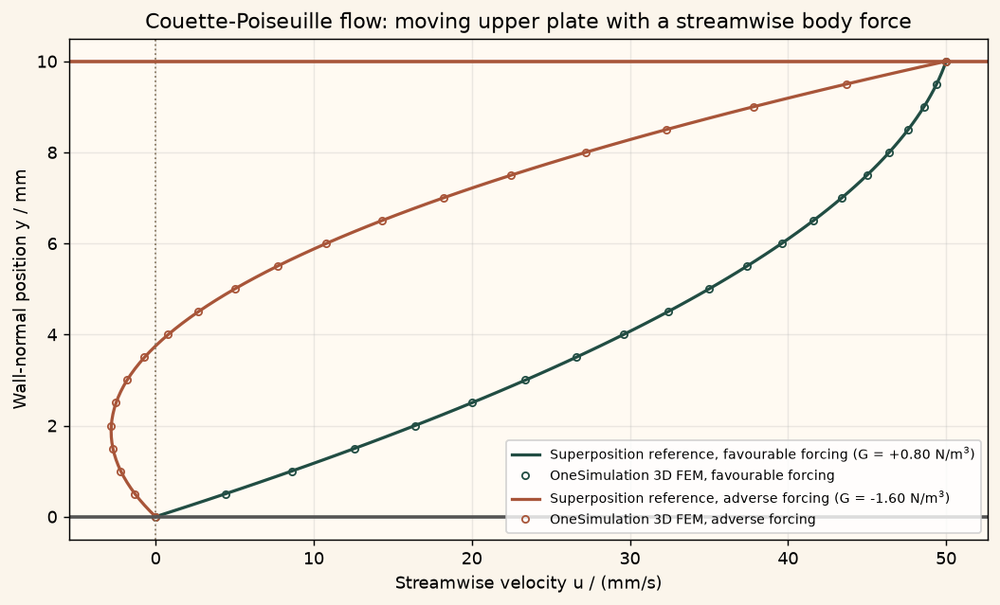

Docs › Examples › Combined Couette-Poiseuille flow
Fluid flow · 3D
Combined Couette-Poiseuille flow
A moving wall plus a pressure gradient, including the adverse case with backflow, graded against the superposed profile.

What it computes
OneSimulation solves the steady incompressible Navier-Stokes equations between a moving and a fixed plate with an axial body force, for a favourable and an adverse gradient.
What it checks
The profile u = U y/h + G/(2 mu) y (h-y), the flow rate, the wall shear and the backflow edge match to solver precision.
The notebook
The complete notebook, cell by cell. Run it to produce the figures and the comparison printout.
An incompressible Newtonian fluid fills the gap of height \(h\) between two parallel plates. The lower plate is fixed, the upper plate slides in its own plane at speed \(U\), and a constant streamwise body force \(G\) (per unit volume, equivalent to a constant pressure gradient \(-\partial p/\partial x = G\)) acts on the fluid. Once the flow is fully developed it depends only on the wall-normal coordinate \(y\) and the steady momentum balance reduces to
OneSimulation solves the full 3D stationary Navier-Stokes system \(\rho(u\cdot\nabla)u=-\nabla p+\mu\nabla^2 u+f\) with inf-sup stable Taylor-Hood finite elements (quadratic velocity, linear pressure) and a Newton solver.
Reference. The problem is linear in \(u\), so the solution is the superposition of the Couette straight line and the Poiseuille parabola,
With a favourable forcing (\(G>0\)) the two contributions add. With an adverse forcing (\(G<0\)) the parabola opposes the dragged flow; once \(G<-2\mu U/h^2\) the wall shear at the fixed plate changes sign and a backflow region appears next to it, bounded by
We solve one favourable and one adverse case and check the profiles, the flow rates, the wall shear stresses and the backflow boundary.
from importlib.metadata import version
import numpy as np
import matplotlib.pyplot as plt
from scipy.integrate import simpson
from onesim.cad.d3 import Box
from onesim.materials import NewtonianFluid
from onesim.meshing import StructuredTetrahedralMesher
from onesim.numerics import Numerics
from onesim.numerics.fem import FiniteElement, TaylorHood
from onesim.numerics.linear import SparseDirect
from onesim.numerics.nonlinear import Newton
from onesim.physics.hydrodynamics import FixedVelocity, IncompressibleNavierStokes, NoSlipWall
from onesim.simulation import Problem, Simulation
from onesim.simulation.field_constraints import MeanValue
from onesim.simulation.initial_conditions.values import InitialValue
print("OneSimulation:", version("onesimulation"))Parameters
The gap height lies along \(y\); the streamwise length (\(x\)) and spanwise width (\(z\)) only serve to form a short 3D domain. The flow is fully developed, so the solution is independent of \(x\) and \(z\). The adverse forcing is chosen below the reversal threshold \(-2\mu U/h^2\) so that a backflow layer forms at the fixed plate.
length = 0.020 # m, streamwise extent (x)
height = 0.010 # m, plate gap (y), the only physically resolved direction
span = 0.005 # m, spanwise extent (z)
mu = 1.0e-3 # Pa·s, dynamic viscosity
rho = 1.0 # kg/m^3, density (unit value: the inertial term vanishes here)
wall_speed = 0.05 # m/s, speed of the sliding upper plate
reversal_threshold = -2.0 * mu * wall_speed / height**2 # N/m^3
cases = {
"favourable forcing": 0.8, # N/m^3, G > 0
"adverse forcing": 1.6 * reversal_threshold, # N/m^3, G < -2 mu U / h^2
}
print(f"U = {wall_speed:.3f} m/s, h = {height*1e3:.1f} mm, "
f"reversal threshold G = {reversal_threshold:.2f} N/m^3")
for label, G in cases.items():
print(f" {label}: G = {G:+.2f} N/m^3, Q_ref = {wall_speed*height/2 + G*height**3/(12*mu):.4e} m^2/s")Model
The plate gap \(h\) is the box width (the \(y\) extent). The lower plate (y_min) is a no-slip wall; the upper plate (y_max) moves at \(U\); the inlet, outlet and spanwise faces carry the fully developed trace, so every one of the six boundary faces has an explicit condition. The body force is passed as a callable.
geometry = Box(length=length, width=height, height=span)
mesh = StructuredTetrahedralMesher(cells=(6, 8, 2)).generate(geometry)
print("Mesh:", mesh.cell_count, "tetrahedra")
fluid = NewtonianFluid(density=rho, dynamic_viscosity=mu)
def reference_profile(y, G):
return wall_speed * y / height + G / (2.0 * mu) * y * (height - y)
def moving_wall(x):
# Uniform tangential speed of the upper plate; x only fixes the array shape.
return np.column_stack((np.full_like(x, wall_speed), np.zeros_like(x), np.zeros_like(x)))
def solve(G):
def forcing(y):
# Constant streamwise body force (per unit volume); y only fixes the array shape.
return np.column_stack((np.full_like(y, G), np.zeros_like(y), np.zeros_like(y)))
def developed_trace(y):
return np.column_stack((reference_profile(y, G), np.zeros_like(y), np.zeros_like(y)))
model = IncompressibleNavierStokes(domain=geometry.volume, material=fluid, body_force=forcing)
developed = (geometry.boundaries.x_min | geometry.boundaries.x_max
| geometry.boundaries.z_min | geometry.boundaries.z_max)
problem = Problem(
name="Couette-Poiseuille flow",
geometry=geometry,
physics=(model,),
boundary_conditions=(
NoSlipWall(boundary=geometry.boundaries.y_min, physics=model),
FixedVelocity(boundary=geometry.boundaries.y_max, physics=model, value=moving_wall),
FixedVelocity(boundary=developed, physics=model, value=developed_trace),
),
constraints=(MeanValue(model.pressure, 0.0),),
initial_conditions=(InitialValue(model.velocity, (0.0, 0.0, 0.0)),),
)
simulation = Simulation(
problem=problem,
mesh=mesh,
numerics=Numerics(
spatial=FiniteElement(element=TaylorHood()),
nonlinear_solver=Newton(
linear_solver=SparseDirect(), absolute_tolerance=1e-11, relative_tolerance=0.0,
),
initial_guess={model.velocity: (0.0, 0.0, 0.0)},
),
)
return model, simulation.solve_stationary()Comparison with the superposition profile
For each case we sample the streamwise velocity along a wall-normal line at mid-domain. Taylor-Hood velocities are quadratic, so the line-plus-parabola profile is represented essentially to solver precision. The flow rate is integrated with Simpson's rule (exact for a parabola), the wall shear stress follows from the velocity gradient at the plates, and in the adverse case the zero crossing of the profile marks the edge of the backflow layer.
y_samples = np.linspace(0.0, height, 81)
line = np.column_stack((np.full_like(y_samples, length / 2),
y_samples,
np.full_like(y_samples, span / 2)))
profiles = {}
for label, G in cases.items():
model, result = solve(G)
u_numeric = np.asarray(result.field(model.velocity).evaluate(line))[:, 0]
u_exact = reference_profile(y_samples, G)
profiles[label] = (G, u_numeric, u_exact)
scale = float(np.max(np.abs(u_exact)))
max_abs_error = float(np.max(np.abs(u_numeric - u_exact)))
rel_error = max_abs_error / scale
print(f"\n{label} (G = {G:+.2f} N/m^3)")
print(f" maximum profile error: {max_abs_error:.3e} m/s ({100*rel_error:.2e} % of max|u|)")
assert rel_error < 1e-6, "Deviation larger than the example tolerance (1e-6 of max|u|)."
# Flow rate per unit span.
Q_numeric = float(simpson(u_numeric, x=y_samples))
Q_reference = wall_speed * height / 2.0 + G * height**3 / (12.0 * mu)
print(f" flow rate: FEM {Q_numeric:.6e} m^2/s, reference {Q_reference:.6e} m^2/s")
assert abs(Q_numeric - Q_reference) / abs(Q_reference) < 1e-5, "Flow rate off."
# Wall shear stresses tau = mu du/dy (second-order differences are exact for a parabola).
dudy = np.gradient(u_numeric, y_samples, edge_order=2)
tau_lower_ref = mu * wall_speed / height + G * height / 2.0
tau_upper_ref = mu * wall_speed / height - G * height / 2.0
tau_scale = mu * wall_speed / height
print(f" wall shear: lower {mu*dudy[0]:+.4e} Pa (ref {tau_lower_ref:+.4e}), "
f"upper {mu*dudy[-1]:+.4e} Pa (ref {tau_upper_ref:+.4e})")
assert abs(mu * dudy[0] - tau_lower_ref) < 1e-4 * tau_scale, "Lower wall shear off."
assert abs(mu * dudy[-1] - tau_upper_ref) < 1e-4 * tau_scale, "Upper wall shear off."
if G > 0:
assert np.all(u_numeric[1:] > 0.0), "Favourable forcing: no backflow expected."
else:
assert mu * dudy[0] < 0.0, "Adverse forcing below the threshold must reverse the wall shear."
y_rev_ref = height + 2.0 * mu * wall_speed / (G * height)
# Zero crossing of the sampled profile (the profile rises monotonically past it).
interior = slice(1, None)
crossing = np.where(np.diff(np.sign(u_numeric[interior])) > 0)[0][0] + 1
y0, y1 = y_samples[crossing], y_samples[crossing + 1]
u0, u1 = u_numeric[crossing], u_numeric[crossing + 1]
y_rev_numeric = y0 - u0 * (y1 - y0) / (u1 - u0)
print(f" backflow layer: FEM y_rev = {y_rev_numeric*1e3:.4f} mm, reference {y_rev_ref*1e3:.4f} mm")
assert abs(y_rev_numeric - y_rev_ref) < 1e-3 * height, "Backflow boundary off."
assert np.min(u_numeric) < 0.0, "A backflow region must exist in the adverse case."Figure
cream = "#fbf5eb"
fig, ax = plt.subplots(figsize=(8, 4.8), constrained_layout=True)
fig.patch.set_facecolor(cream)
ax.set_facecolor("#fffaf2")
ax.grid(alpha=0.25)
colors = {"favourable forcing": "#214D43", "adverse forcing": "#A85539"}
for label, (G, u_numeric, u_exact) in profiles.items():
ax.plot(u_exact * 1000, y_samples * 1000, color=colors[label], lw=1.8,
label=f"Superposition reference, {label} (G = {G:+.2f} N/m$^3$)")
ax.plot(u_numeric[::4] * 1000, y_samples[::4] * 1000, "o", color=colors[label], ms=4,
mfc="none", label=f"OneSimulation 3D FEM, {label}")
ax.axvline(0.0, color="#8a7a63", ls=":", lw=1.0)
ax.axhline(0.0, color="#555", lw=2)
ax.axhline(height * 1000, color="#A85539", lw=2)
ax.set(xlabel="Streamwise velocity u / (mm/s)", ylabel="Wall-normal position y / mm",
title="Couette-Poiseuille flow: moving upper plate with a streamwise body force")
ax.legend(fontsize=8)
plt.show()Going further
Sweep the forcing from strongly favourable to strongly adverse and watch the profile change from a bulging parabola to a straight line (at \(G=0\)) and on to an S-shaped curve with a backflow layer; the net flow rate vanishes at \(G=-6\mu U/h^2\). Increase the wall speed until the Reynolds number leaves the creeping regime; the fully developed profile is unchanged because the inertial term vanishes for a unidirectional flow. Replace the body force with an explicit pressure difference between inlet and outlet and recover the same profiles.